About RestOrRant
RestOrRant is a command line application that is morphed from an addressbook application. This is a Software Engineering project that required us to use their code as a base and we decided to morph it into a restaurant management system. This application enables restaurant front-end operators to:
-
Manage the occupancy of the tables in their restaurant
-
Keep track of the orders for each table
-
Refer to the menu with ease
-
Tabulate statistics of the restaurant
RestOrRant has 4 different modes: RestaurantMode, TableMode, MenuMode and StatisticsMode. These modes are meant to handle the 4 features mentioned above.
The part of RestOrRant that I implemented is the tables feature which takes place in only the RestaurantMode. Also, I handled the API and implementation of the Logic component. More details about these features will be elaborated below including documentation of it in the user and developer guide.
Please take note some of the symbols that will be commonly used in this document:
| This symbol indicates important information. |
addTable : A grey highlight (called a markup) indicates that this is a command that can be input into the command line and executed by the application.
Table : A grey highlight with blue text represents a component, a class or an object in the architecture of the application.
Summary of contributions
In this section, all of my contributions will be listed in detail including my code and documentations.
Within the table feature, you will find many commands implemented to create and manipulate the tables. These include:
-
Adding Tables: added the ability to add tables to RestOrRant
-
What it does: It adds a table to RestOrRant with the specified number of seats at the table. This table is also stored in
Storagecomponent and displayed on the User Interface. -
Justification: This command is a fundamental feature to allow the user to begin using RestOrRant.
-
Highlights: This command allows the addition of multiple tables at once, specifying each table’s number of seats individually.
-
-
Changing the occupancy: added *the ability to change the number of customers seated at a table
-
What it does: It updates the table in RestOrRant with the new occupancy of the table to reflect the current state of the physical restaurant.
-
Justification: This command is important in allowing the user to keep track of the exact number of customers at each table.
-
Highlights: The number of customers seated at the table will not be allowed to exceed the number of seats at the table.
-
-
Changing the number of seats: added the ability to edit the number of seats at a table after it has been created
-
What it does: It updates the table in RestOrRant with the new number of seats.
-
Justification: In the event that more chairs are pulled to a table or a table as has been replaced by one of different size, this command would enable the user to update RestOrRant to match its current physical state.
-
Highlights: This command is allowed to be use while customers are already seated at the table but will not allow the number of seats to be less than the current number of customers seated at the table.
-
-
Clearing all tables: added the ability to delete all tables
-
What it does: It removes all tables from RestOrRant.
-
Justification: In the event that the restaurant is being renovated or tables are re-numbered, this command would allow the user to quickly remove all tables so that they can create new tables with the correct table number and number of seats.
-
Highlights: This command has a safety mechanism to only be executed when the restaurant has no customers at all.
-
-
Checking for space: added the ability to search for available tables
-
What it does: It checks RestOrRant for the next available table for a given number of customers.
-
Justification: Often users would have to physically check the restaurant or eyeball RestOrRant for available tables. In the event that there are large numbers of tables, that would be very inefficient. Hence, this command is menat to alleviate that problem by automating that process to quickly find the best available table.
-
Highlights: This command searches for smallest table to fit the given number of customers with the smallest table number.
-
-
Minor enhancement: implemented the
RestaurantModeto only accept commands for the table features only and morphed theLogiccomponent to be compatible with RestOrRant’s features.-
Code contributed: [Project Code Dashboard]
-
-
Other contributions:
-
Project management:
-
Encourage discussion during group meetings to ensure decisions considers all aspects
-
Enforced standardised coding styles throughout the project
-
-
Enhancements to existing features:
-
Documentation:
-
Wrote up the READme for the project: #14
-
-
Community:
-
Contributions to the User Guide
This section shows the updates that I made to the RestOrRant User Guide for table features to ensure that it accurately documents the current features in the application.
In the User Guide, I wrote about the usages of the commands that can be used in `RestaurantMode |
Restaurant Mode
In Restaurant Mode, which is the default mode, you can perform table-related operations and view the order items across all tables.
The function of the side and main panels are as follows:
-
Order Panel: This panel shows you the list of items ordered by all tables in RestOrRant, arranged in chronological order. This means that items that were ordered first appears at the top of the list. It also indicates the quantity left to serve for each item, and the background turns dark when the item is fully served.
-
Table Panel: This panel gives you an overview of all tables in RestOrRant with their table numbers and their respective occupancies.
|
The light coloured tables represent unoccupied tables. The slightly darker coloured tables represent occupied tables. The very dark coloured tables represent unusable tables. |
Here are the commands that you can use in this mode to efficiently manage the tables in your restaurant.
Adding tables : addTable
As you set up RestOrRant to reflect your physical restaurant or add tables in the event that there are new tables in your restaurant, this command allows you to add tables in RestOrRant by specifying the number of seats at each table.
| The maximum number of tables that can be added is 400. |
| Table number increases sequentially starting from 1. |
| You can add multiple tables at once. This means all of your tables can be added with a single command! |
|
You will see a success message in the Results Display and the new tables will be displayed in the Table Panel. |
For example, RestOrRant initially has 35 tables when you open it for the first time as shown in the image below.
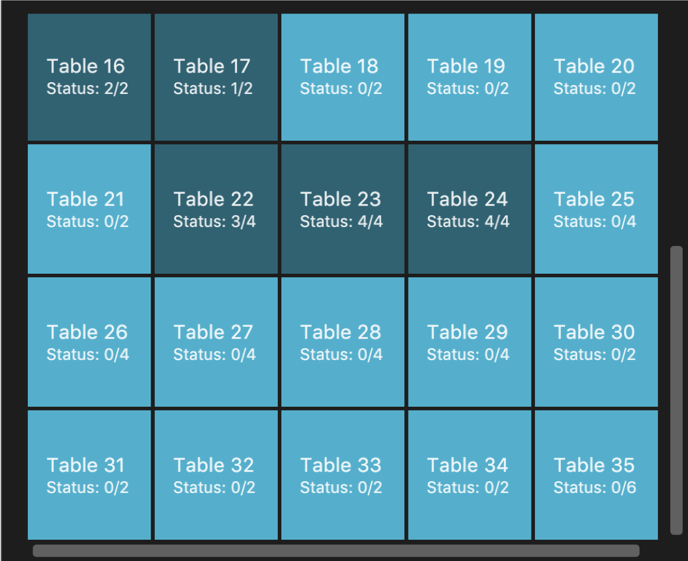
Suppose you decide to open 10 more tables in your restaurant to accommodate more customers, with the number of seats of the first 5 tables be 2, the number of seats for the next 3 tables be 4, and the number of seats at the last 2 tables be 8.
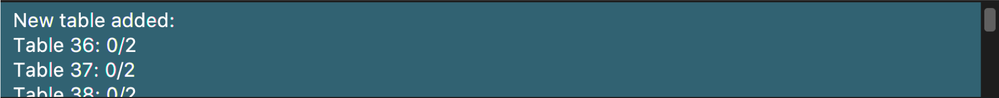
The Table Panel will also be updated and if you were to scroll down on the Table Panel, you will see Table 36 to Table 45 added as shown in the image below.
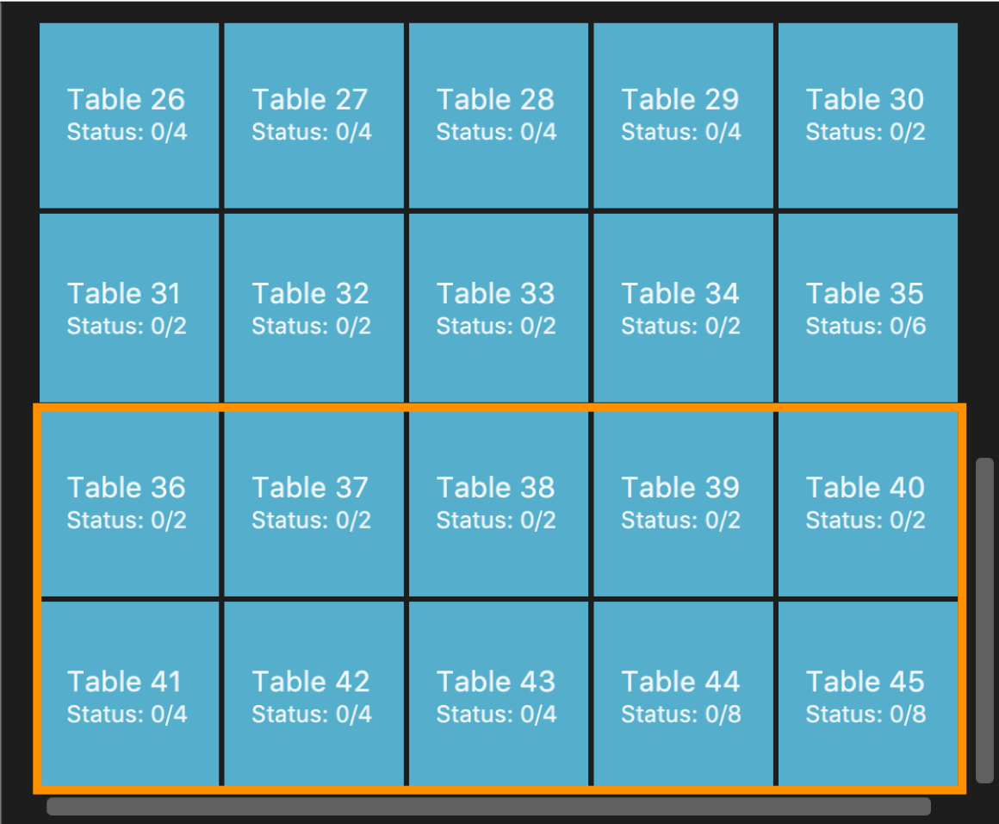
|
|
Alternatively, you can also add just one table at a time. For example, you can use the command |
Editing the occupancy : editPax
During the operation of your restaurant, this command helps you to update the occupancies of the tables in RestOrRant when customers enter your restaurant.
| Changing the table’s occupancy to 0 will automatically clear all records of its orders and they will not be included in RestOrRant’s statistics. |
| The specified table has to exist in RestOrRant and your specified number of customers cannot be greater than the number of seats available at the table. |
|
You will see a success message in the Results Display and the updated table will be displayed in the Table Panel. |
For example, Table 1 in RestOrRant is initially unoccupied as shown below where the table’s status is 0/2.
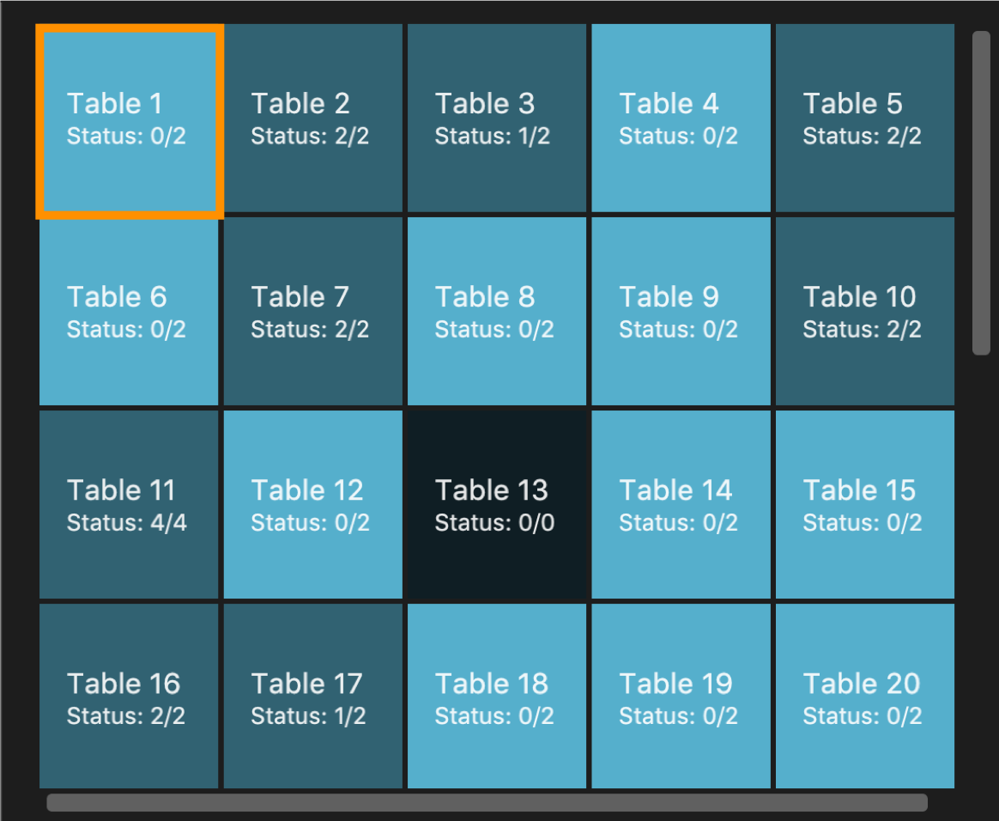
Suppose two customers now enter your restaurant and you would like to seat them at table 1.
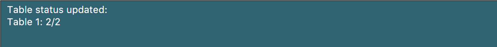
The Table Panel will also be updated where Table 1 shows an updated table status as well as a change to a slightly darker colour to represent an occupied table.
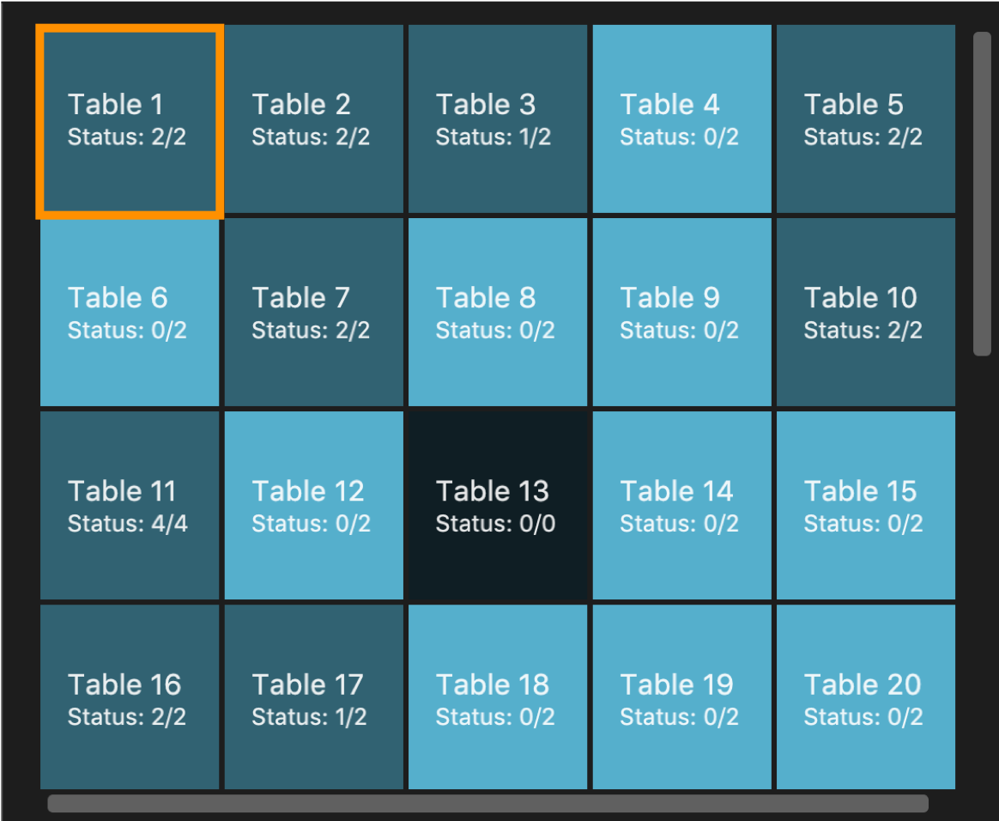
|
Editing the available seats : editSeats
In the event that there are changes to any table in your restaurant in terms of the number of seats at the table, this command can help you make sure RestOrRant is updated to reflect your physical restaurant.
| You can use this command to change the number of seats at a table to 0 to represent an unusable table. This would be useful if a table is broken or you decide to remove a table without re-numbering all the other tables. |
| The specified table has to exist in RestOrRant and the specified number of seats has to be more than the number of customers already seated at the table. |
|
You will see a success message in the Results Display and the updated table will be displayed in the Table Panel. |
For example, Table 2 in RestOrRant is initially occupied as shown below where the table’s status is 2/2.
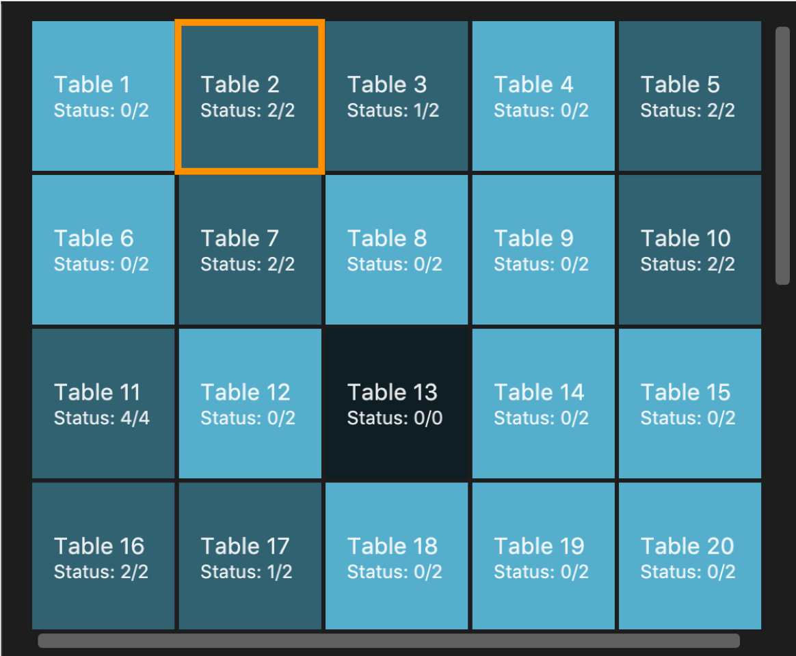
Suppose the customers at this table inform you that 2 other friends are joining them and they would like to pull chairs over. Table 2 in the Table Panel will then display the updated table information as shown below.
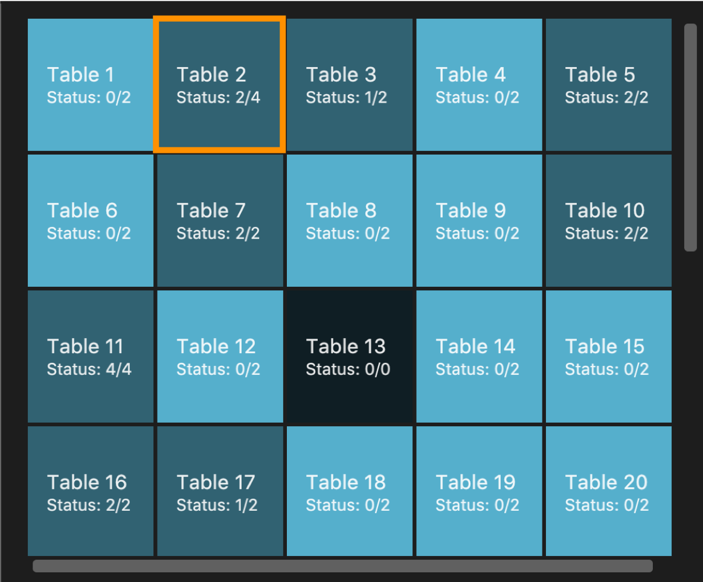
|
Clearing all the tables : clearTables
In the event that you have undergone massive changes in the restaurant, you can use this command to remove all tables in RestOrRant.
| This command checks if the restaurant is completely unoccupied before clearing the tables so you don’t have to worry about any accidents. |
| Clearing all the tables and adding them back using the addTable command is way faster than editing the tables if there are a lot of changes. |
This command is irreversible! In the event that you accidentally cleared your tables, you have to use the addTable command to add all the tables back.
|
|
You will see a success message in the Results Display and all tables will be removed from the Table Panel. |
For example, when all the customers have left the restaurant, all the tables in RestOrRant will be unoccupied as shown below.
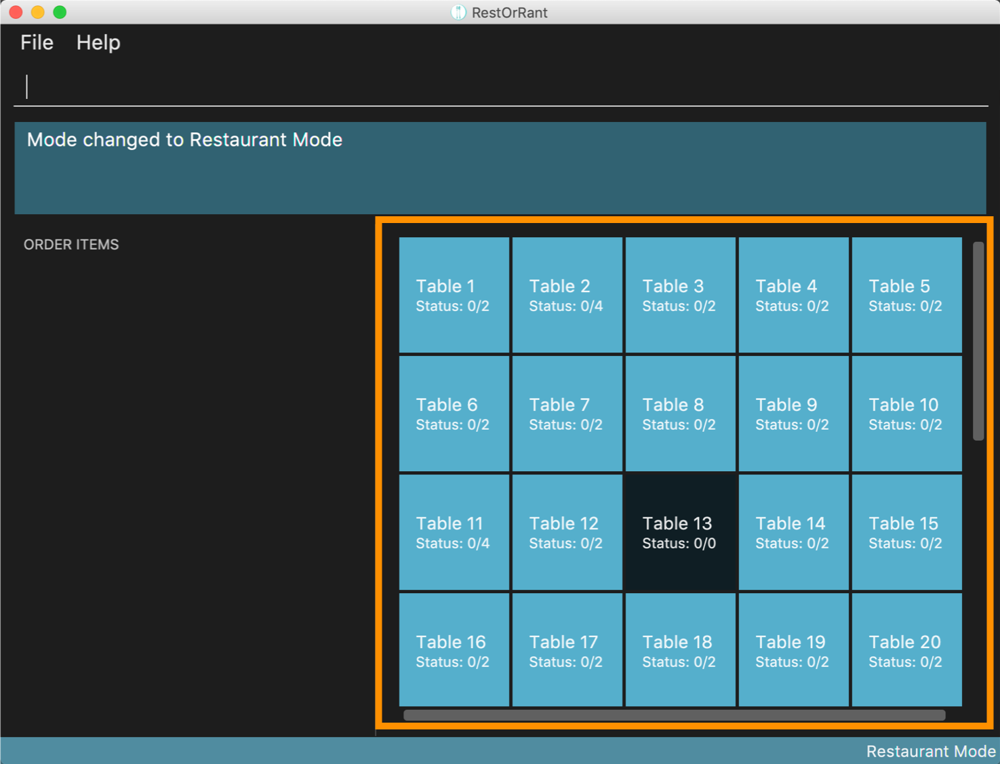
After you enter the command
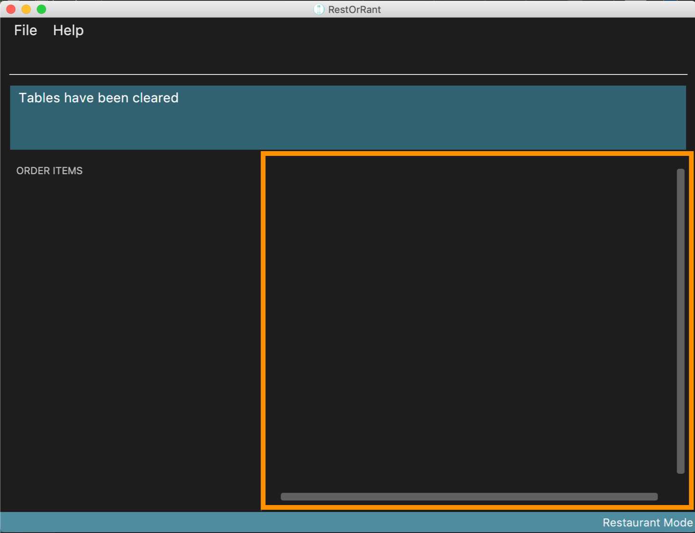
|
Getting available tables for customers : spaceFor
To speed up your management of customers, this command can help you look for available tables to accommodate your customers.
| This command finds the table with the least number of seats that is able to accommodate the specified customers. It will always choose the table with the smallest table number first. |
|
You will see a success message in the Results Display and the chosen table will be updated with the specified number of customers. |
For example, in the sample layout we provided, the next available table that can fit 3 customers is Table 25, as shown below.
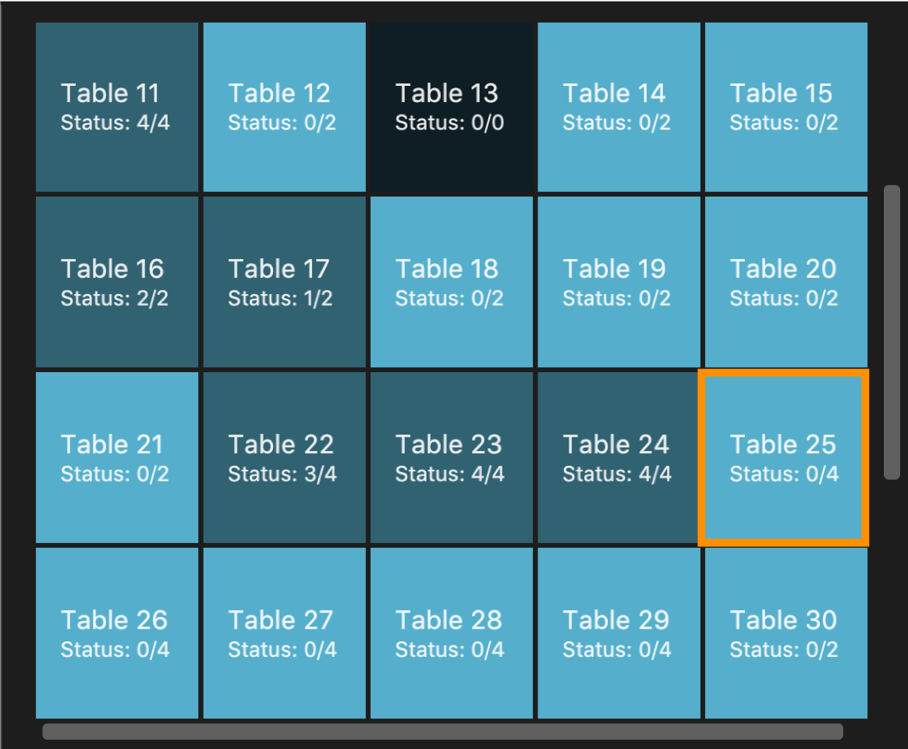
Suppose, 3 customers enter your restaurant and you want to quickly locate an available table for them, you can simply use the In the Table Panel, you will see that Table 25 will have been updated to the correct occupancy and changed to a slightly darker colour to indicate that it is occupied.
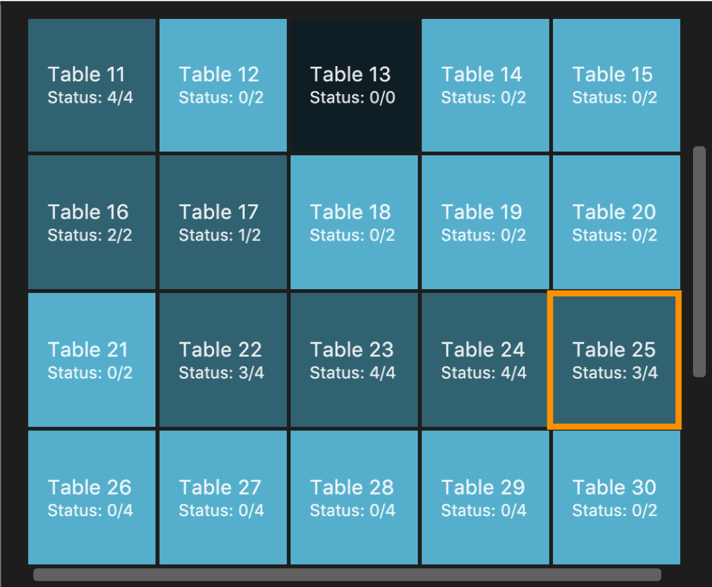
|
Contributions to the Developer Guide
In the Developer Guide, I provided implementation details of the |
Edit pax at a table
Current Implementation
The edit pax mechanism is facilitated by UniqueTableList. It stores all tables currently in ROR and ensures that there are no duplicated tables. Additionally, it implements UniqueTableList#setTable(targetTable, editedTable), which replaces the target table in the list with the new table with the updated TableStatus.
This operation is exposed in the Model interface as Model#setTable(targetTable, editedTable).
Given below is an example usage scenario and how the edit pax mechanism behaves at each step.
Step 1. Suppose the user launches the application for the first time, the sample data has 35 tables and are stored in the UniqueTableList as shown below. Focus your attention on the Table with the orange markup as this will be our target table in this example.
Step 2. Suppose the user decides to have 2 customers sit at table 2 and executes editPax 2 2 command to update Table 2 with 2 customers. The editPax command calls Model#setTable(targeTable, editedTable), causing the ROR to create a new table with the updated TableStatus and replace the current target table in the UniqueTableList. As shown below, the index of the replaced table now points to a new Table which is highlighted orange.
The Storage detects the above change in the UniqueTableList and also updates itself.
The following sequence diagram shows how the edit pax operation works:
| If the table to be edited does not exist in the UniqueTableList, the application returns an error to the user rather than attempting to replace the non existent table. |
The following activity diagram summarises what happens when a user executes a new command:
Design Considerations
| Aspect | Alternative 1 | Alternative 2 |
|---|---|---|
Editing the tables in UniqueTableList |
Replace the entire table with an updated table. We decided to choose this option because we realise that if we were to edit the tables directly, we would need a listener for each Table in the UniqueTableList to detect changes, which is not an efficient design. Furthermore, the tables can only be edited one at a time. Hence, the space efficiency issue would not be significant. |
Directly edit the TableStatus of the tables. |